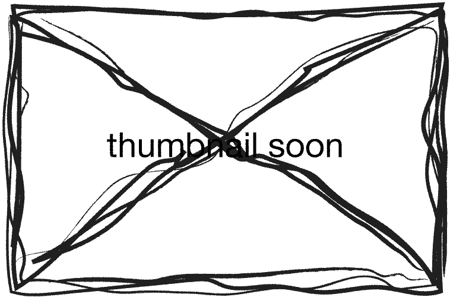

Dreams present themselves as cinematic experiences. Dreams are
fantastical expressions of our unconscious drives. Whatever we
repress, leaks through the cracks of the night, into our minds.
They are mysterious juxtapositions of displaced subjects and
objects. We generate doubling, multiplying selves, mirror images,
metamorphosis, bodily disintegration. Stretched, expanded, zoomed
realities. Discontinuous narratives, fragmented projections.
Dreams draw landscapes of possibilities. It is within the
architecture of the dream that the past, present and future meet
in a different time and space.
laak.club
presents its first exhibition, curated with
Home Cinema
&
wysiwyg. The first iteration of Laak’s shows will present a narrative of
selected time-based works, screened in XXL format in the grand
warehouse of Laak, where each weekend will constitute a different
programme and experience.
The magpie is one of the most intelligent non-human
species, able to distinguish themselves from their
reflections. In many cultures, they are linked to
superstitions, with the rhyme “One for the Sorrow” that
illustrates how their appearances can be a form of
fortune-telling. Via the embodiment of the magpie as an
allegorical notion to shift away from the human-centered
perspective, the film aims to create speculations of
possible futures through the eyes of the magpie as a
prophet—seer—diviner, reinforced by its mythical qualities
retold in folklores and legends.
Giovanni Giaretta
Ruin of a Fiction (2019)

Netherlands; duration: 0:09:55
The video is an investigation into the archeology of
obsolete special effects. It is set in an artificial world
inspired by science fiction low budget movies, cult TV
series, and Hollywood classics from the 70s and 80s. The
consolidated visual metaphor of the cave is used in order
to make the viewer transition between two realities. Once
on the other side, we meet a fictional character, an old
talking rock that lives in a cavern. The rock is musing on
all the films seen and that have shaped its own memories.
Cóilín O'Connell and Michelle Doyle
Super Gairdín (2022)
Ireland; duration: 0:24:29
Super Gairdín is a new video work by artists Cóilín
O’Connell and Michelle Doyle about divine spirits,
landscape, language and nature. Taking cues from the folk
horror tradition, the film is set in a desolate garden
centre, a space where landscape is held indefinitely. A
figure wanders the aisles of saplings, chancing upon a
long forgotten rock deity; the Cailleach. The Cailleach is
capable of great forces, summoning nature at will and
throwing rocks from her apron. She views mankind with
hatred and will soon enact her revenge.
Giulia Jimenez
Cataratas (2019)
USA; duration: 0:07:05
In a newborn volcanic island, a sulfur miner is offered
something better for his attention.
Joachim Schoones
7000-8000 (2018)
Netherlands; duration: 0:01:07
A drive and a conversation
Anna Tamm
Still Here (2022)
Netherlands, duration: 0:02:50
The film drifts through a dystopian landscape where past
and present breathe in sync, showing a stretch in time
induced by a traumatic memory.
rustan söderling
Grimshader (2022)
Netherlands; duration: 0:16:57
Grimshader follows the inner monologue of an unnamed
protagonist, sent by his boss Bruce Carmichael on a
night-time drive with an unknown destination. Is he
supposed to get a takeaway from Fusion Takeaway, the local
Chinese restaurant in Stornoway? At this time of night? Or
is something more nefarious going on? Is it somehow
related to the ongoing investigation by Grimshader
internal inquires? The dreamlike journey gradually grows
more surreal and dreamlike before it reaches an abrupt
end.
Clàudia del Barrio
GRWM (2022)
Spain; duration: 0:15:24
"Prosumers consume and produce simultaneously, while
social networks store hours of content. This content
commercializes our life experiences in the virtual world,
turning them into popular culture, which feeds and leads
us to spend part of our daily time on our virtual
presence. GRWM (get ready with me) shows influencers
sharing their first moments of the day. These videos have
become virtual spaces where intimate moments, which may
involve important subjects such as mental health, are also
shared. By delving into these spaces, GRWM reflects on the
banalisation of sensitive content."
Week 2
Collette Rayner
The Horizon Plays Itself Back Into Being
(2019)
Netherlands, Scotland; duration: 0:05:55
Rayner utilizes labour-intensive, hand-drawn stop-motion
animations, utilising the methodology of animating to
construct fictional narratives to approximate a sense of
reality. The works move tonally towards soft-core science
fiction, in pursuit of a state of weirdness: a
disconnection of understanding coupled with stabilizing
scenarios, the artist attempts to visually preview
scenarios in order to do the future self a ‘solid’ by
predicting obstacles and self-fulfilling cycles. The work
looks through an un-reality to something that is close to
an anxiousness about the future.
Feline Hjermind
Silence lay steadily against the wood and stone
(2022)
Netherlands; duration: 0:07:57
The video is an investigation into the archeology of
obsolete special effects. It is set in an artificial world
inspired by science fiction low budget movies, cult TV
series, and Hollywood classics from the 70s and 80s. The
consolidated visual metaphor of the cave is used in order
to make the viewer transition between two realities. Once
on the other side, we meet a fictional character, an old
talking rock that lives in a cavern. The rock is musing on
all the films seen and that have shaped its own memories.
Sam Keogh
‘If you are reading this, get ready to meet me in your
dream TONIGHT’
(2021)
Ireland; duration: 0:06:52
The film was an attempt to translate the direct address of
live performance to a lock-down art TV format. It was
effective, in that 14 people contacted me after watching
to tell me I had appeared in their dream. If a performance
can be thought of as an act of appearing to an audience,
then this film can be thought of as a tool which
facilitates a performance.
Roberto Romano
Abc12 (2022)
Netherlands; duration: 0:13:00
ABC12 is a 3D animated short film about the journey of the
self into the different shapes and forms of simulation.
The narrative evolves as a visual representation of the
author’s poems, therefore it is enacted, choreographed,
and imagined. It is some kind of interdimensional diary
breaking the constraints of time and language towards the
inner mystery of the synthetic self.
Beep (Piep) Beep (Piep) Buzz (Zoem) Beep (Piep) Buzz
(Zoem) is a long-term project in which I - through the use
of physical actions and interventions - let the narrative
qualities of both the desire for knowledge and the urge to
maintain ignorance influence the course of the video.
During the production I focus on what forms the basis of
my artistic practice, namely the interplay between my
personal development and its narrative character and that
what an artistic practice could be, based on (art)
historical notions such as traditions and thus sharing a
similar narrative nature.
Leith Benkhedda
The Internet of Friends (2022)
Netherlands; duration: 0:21:38
The Internet of Friends is a film exploring online
identity and community formation through a collection of
short stories, testimonies, and autofictions
Thomas Vancoppenolle
Meditation On A Landscape (2022)
Belgium; duration: 0:30:00
'Meditation On A Landscape' is a video work that reflects
on the inherent qualities of a landscape, and how they
interact with us in different emotional ways as we move
through and past them. Inspired by a personal journey
across several borders, along rivers and mountains, in
search of a sense of tranquility and a clearer view of
self, the work came together as a fluid organism made of
sound and image. An organism consisting of short natural
impressions, constantly transforming themselves into
something new, somewhere between abstraction and
figuration. A work about holding on and letting go.
Mauricio Freyre
Interspecies Architecture
Peru, Taiwan, Spain; duration: 0:12:41
A journey in the forest near Taipei without a certain
destination, a nomadic speculation on relationships and
processes that occur among species and dimensions beyond
the human.
Week 3
Anna Theunissen
Iza Noticing Something (2022)
Netherlands; duration: 0:03:31
How do you visualise present day alienation of social
encounters and the longing to connect? Everyone has their
story they wanna share and tell. This is a street scene
video collage made with my neighbor's, colleagues and
housemates, all of them notice something outside of the
frame but not each other. This scene is made to make a
space with people come together. Since everyone in the
video stares at something outside of the frame, they
respond on their surrounding and the people watching the
video.
Manuel Boden
Cabinets (2019)
Germany; duration: 0:25:26
The video is an investigation into the archeology of
obsolete special effects. It is set in an artificial world
inspired by science fiction low budget movies, cult TV
series, and Hollywood classics from the 70s and 80s. The
consolidated visual metaphor of the cave is used in order
to make the viewer transition between two realities. Once
on the other side, we meet a fictional character, an old
talking rock that lives in a cavern. The rock is musing on
all the films seen and that have shaped its own memories.
BITSRAY
Losing My Religion (2021)
Netherlands; duration: 0:04:26
Losing My Religion is a collaboration project between
BITSRAY and PHRAME, the Dutch electronic-pop band. This is
a music video for PHRAME'S cover- Losing My Religion,
initially written by R.E.M. By making this music video,
Losing My Religion, the director aimed to use the alien
angle, the mobility device she makes for her backpack, to
explore the relationship between her birthplace and
herself- love, distancing, dazed, dread, and concealment.
BITSRAY seeks a form that she could be free to respond to
create a visual dialogue with the preset monitoring
system.
Dylan Spencer-Davidson
Affective Dynamics Study Group (2020)
Germany; duration: 0:09:00
Affective Dynamics Study Group is a collective devoted to
'study' in the Motenian sense, examining issues around
interpersonal relations, non-violent communication,
vulnerability, complicity and new ways of being and living
together. Part consciousness-raising experiential group,
part never-ending rehearsal, the collective meets to
perform a series of experimental exercises together,
borrowed from the fields of somatics, group therapy,
activism, and movement practices. The video is based on
footage from the study session and interviews with the
participants.
Verena Blok
Out Lookers (2022)
Netherlands; duration: 0:07:26
In “Out Lookers”, Verena Blok portrays older women who
reclaim their space in public. Witnessing these women age
while she herself was maturing into womanhood, the
dominant Western discourse privileging youthful femininity
rendered them slowly invisible. The film uses snippets of
candid conversation between the artist and the women about
the transitional nature of femininity. At times they speak
through a book they love, Olga Tokarczuk's“DriveYour
PlowOverTheBonesOfThe Dead” (2009), a bleakly comic
mystery novel about a post-menopausal woman who raises
fierce questions about human behavior.
Helena Roig
two way (2022)
Netherlands; duration: 0:14:00
A two way (2021) is a body of work made in dialogue.
Questioning power relations generated around and dictated
by the camera, Helena Roig Prats (ES/NL) and Moon Baby
(ES/NL) expose their experience as sex workers while
creating content for Moon Baby’s OnlyFan account. How do
we reflect our intimate selves in a camera transmitted to
others?
Giulio Squillacciotti
The Dispute (2021)
Italy; duration: 00:01:15
The mood of the film is that of a bare theatrical
representation that lives only on its characters. A daily
street verbal brawl is portrayed in a performative act
with no beginning nor end. Seems like somebody is about to
fight, but they never get to that, or are they? The scene
takes place somewhere for a whatever reason, in a cycled
loop of gestures and expressions. Some are watching, some
others take pictures, while a woman tries to calm the
clash down.
 The magpie is one of the most intelligent non-human species, able to distinguish themselves from their reflections. In many cultures, they are linked to superstitions, with the rhyme “One for the Sorrow” that illustrates how their appearances can be a form of fortune-telling. Via the embodiment of the magpie as an allegorical notion to shift away from the human-centered perspective, the film aims to create speculations of possible futures through the eyes of the magpie as a prophet—seer—diviner, reinforced by its mythical qualities retold in folklores and legends.
The magpie is one of the most intelligent non-human species, able to distinguish themselves from their reflections. In many cultures, they are linked to superstitions, with the rhyme “One for the Sorrow” that illustrates how their appearances can be a form of fortune-telling. Via the embodiment of the magpie as an allegorical notion to shift away from the human-centered perspective, the film aims to create speculations of possible futures through the eyes of the magpie as a prophet—seer—diviner, reinforced by its mythical qualities retold in folklores and legends.